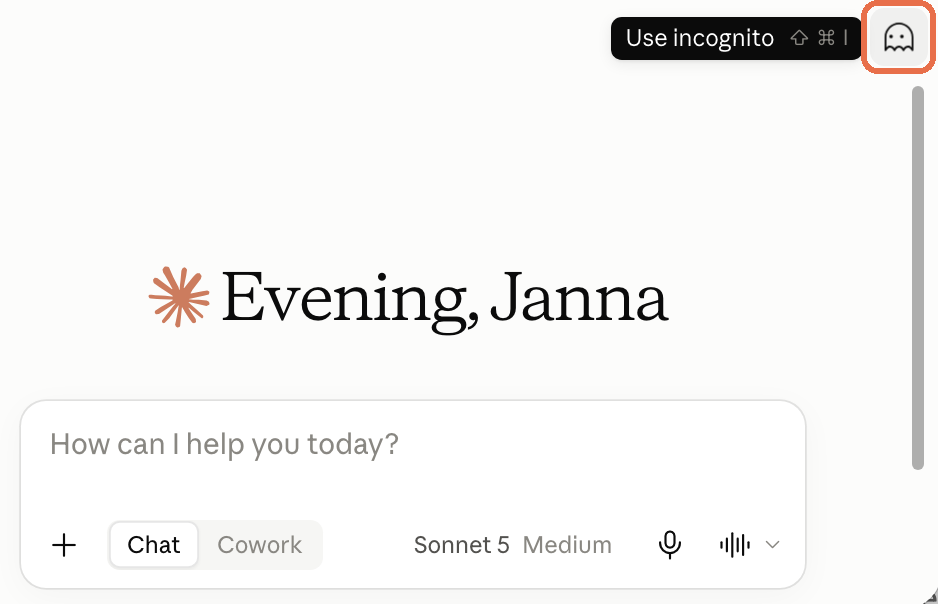
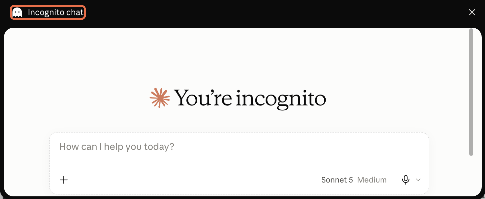
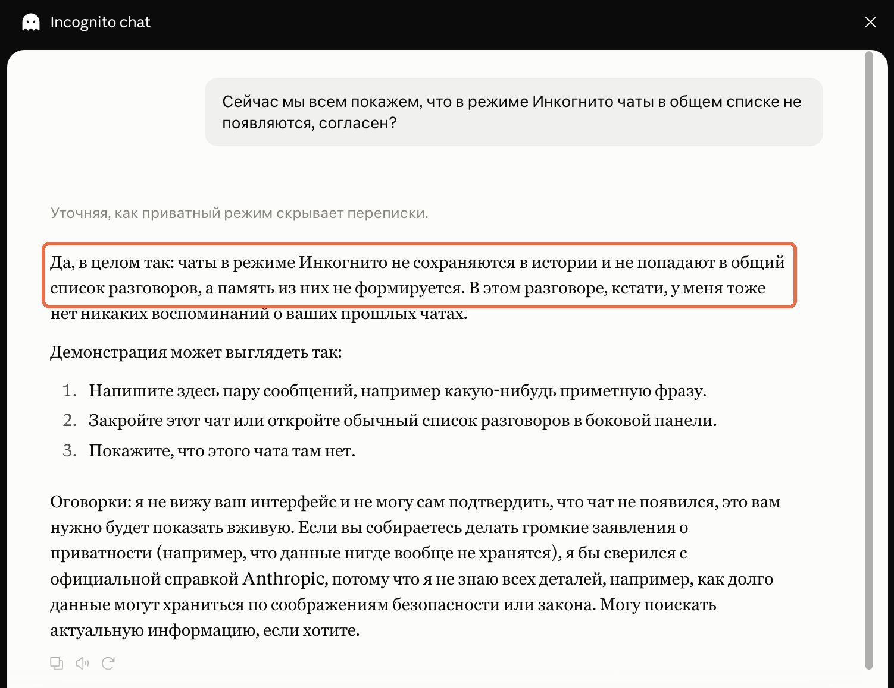
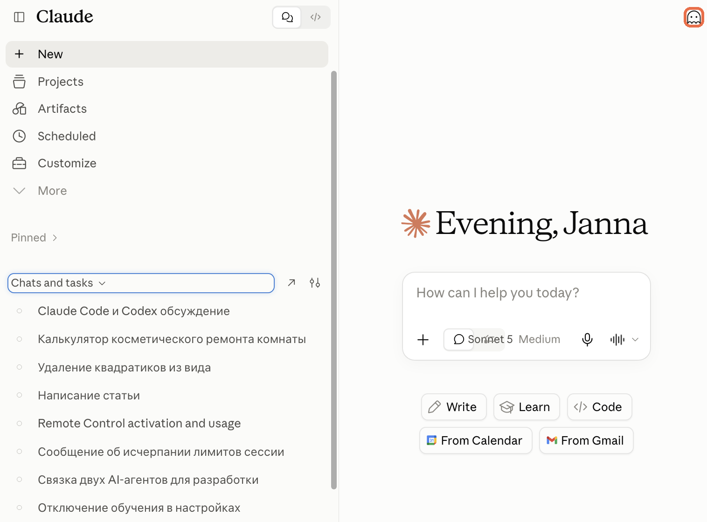

Содержание
Зачем нужен режим инкогнито Как включить инкогнито Как убедиться, что чат не сохранился Что инкогнито делает и чего не делает Когда включать, а когда не стоит ИсточникиClaude.ai · Инкогнито
Инкогнито в Claude: разговор, который не попадёт в память
Ты собираешься спросить у Claude про здоровье, чужие деньги или семейную ситуацию. Разговор разовый, но он ляжет в историю и в память, и потом Claude будет припоминать его в других чатах. И дело не в том, что это не к месту. Ты вообще не хочешь, чтобы этот разговор где-то потом всплыл: поговорил, закрыл чат - и всё, больше он нигде и никогда не появляется. Отдельную настройку для этого искать не нужно: в углу есть кнопка с призраком
Если ты ещё не вошёл в Claude, сначала пройди «Claude из России: подключение без блокировок». Там доступ и первый чат, а сюда вернёшься за инкогнито
Разовый разговор
Зачем нужен режим инкогнито
Обычный чат Claude делает две вещи сразу: сохраняет разговор в истории слева и по ходу дела запоминает про тебя факты, чтобы отвечать точнее в следующий раз. Чаще всего это удобно. Но не каждый разговор ты хочешь оставлять в этой картине
Речь о чувствительных темах, личных вопросах и конфиденциальной информации - своей или чужой. Вопросы про диагноз и лекарства, чужие зарплаты и долги, конфликт с близким человеком, черновик заявления об уходе, чей-то документ, который ты просто попросил разобрать. Заводить ради такого второй аккаунт не нужно, а чистить историю вручную потом неудобно
Простыми словами: инкогнито - это разговор на один раз. Claude отвечает так же, но этот чат не появится в истории и не станет частью того, что он о тебе помнит
Четыре действия
Как включить инкогнито
Кнопка живёт не в настройках, а прямо на экране чата. Многие ищут её в Settings и не находят, поэтому запомни место: правый верхний угол
1. Найди призрака в углу
Открой новый чат и посмотри в правый верхний угол окна. Там стоит кнопка с иконкой призрака. Если навести на неё курсор, появится подпись Use incognito. Рядом Claude показывает горячие клавиши для твоей системы: на Mac это ⇧⌘I, на Windows сочетание своё - нажимать его необязательно, кнопка работает мышкой на любой системе

Результат: ты нашёл вход в инкогнито и можешь включать его одним нажатием или с клавиатуры
2. Проверь, что окно открылось
Нажми на призрака. Поверх обычного Claude откроется отдельное чёрное окно: слева вверху написано Incognito chat с тем же призраком, в центре крупная надпись You're incognito, справа вверху крестик для выхода

Результат: на экране чёрное окно, а не обычный светлый чат. Это единственная проверка, которая нужна перед первым сообщением
3. Пиши как обычно
Дальше ничего не меняется: то же поле ввода, тот же выбор модели, тот же микрофон. Claude отвечает так же подробно, как в обычном чате. Разница только в том, что этот разговор нигде не останется
Важное отличие: в инкогнито Claude не помнит и твои прошлые чаты тоже. Если ответ зависит от того, что вы обсуждали раньше, нужные детали придётся написать прямо здесь
Результат: ты получаешь обычный ответ Claude, но без следа в истории и в памяти
4. Закрой чат, когда закончил
Нажми крестик в правом верхнем углу чёрного окна. Ты вернёшься в обычный Claude. Поднять этот разговор позже нельзя: ни в истории, ни поиском его больше нет
Перед закрытием: если из разговора нужен результат - список, письмо, расчёт, - скопируй его себе сразу. После закрытия вернуться будет некуда
Результат: разговор закончен и не оставил следа в аккаунте
Убедиться самому
Как убедиться, что чат не сохранился
Не верь на слово ни инструкции, ни самому Claude. Проверка занимает минуту и делается один раз - дальше ты просто знаешь, что режим работает

Проверка за минуту
- Включи инкогнито и напиши приметную фразу, которую легко узнать
- Закрой окно крестиком
- Открой обычный список чатов в боковой панели
- Убедись, что этого разговора в списке нет

Результат: ты своими глазами увидел, что чат не попал в историю, и дальше можешь на режим полагаться
Честные границы
Что инкогнито делает и чего не делает
Инкогнито - это приватность внутри твоего аккаунта Claude, а не полная анонимность в интернете. Разделять эти вещи важно: на приватности легко успокоиться сильнее, чем стоит
Что режим делает
- Разговор не появляется в списке чатов
- Из разговора не формируется память о тебе
- Claude в этом чате не опирается на твои прошлые беседы
- Позже этот чат нельзя найти поиском и открыть заново
Чего режим не делает: он не прячет тебя от провайдера, работодателя или владельца компьютера и не превращает разговор в анонимный. Сообщение всё равно уходит на сервер, чтобы Claude мог ответить
Насколько долго данные живут на стороне сервиса и что происходит с ними по требованиям безопасности или закона - вопрос не интерфейса, а правил Anthropic. Если тебе нужна точность в этом месте, сверься со справкой по ссылке в конце: в самом окне такой информации нет
Не включать по привычке
Когда включать, а когда не стоит
Режим полезен точечно. Если включать его всегда, Claude перестанет накапливать про тебя полезное и будет каждый раз начинать знакомство заново
Включай инкогнито
- здоровье, диагнозы, лекарства и самочувствие
- деньги, долги и зарплаты - свои и чужие
- конфликт, развод, тяжёлый разговор с близким
- черновик заявления или письма, о котором пока никто не знает
- чужой документ, который ты просто разбираешь один раз
- разговор с чужого компьютера
Оставь обычный чат
- рабочая задача, к которой ты вернёшься завтра
- всё, что должно попасть в память и пригодиться дальше
- длинный проект, где важна история переписки
- любой разговор, результат которого захочется перечитать
Если сомневаешься: задай себе один вопрос - захочу ли я, чтобы Claude вспомнил об этом через месяц в другом чате. Ответ «нет» - включай призрака
Проверено 18 сентября 2026
Источники
- Экраны Claude.ai от 18 сентября 2026 - кнопка призрака, окно Incognito chat, список чатов после закрытия
- Claude Help Center - официальная справка Anthropic: сроки и условия хранения данных проверяй здесь, интерфейс их не показывает
Бесплатный практикум
Дальше начинается вайб-кодинг
Инкогнито, память, проекты - это кнопки в чате. Следующий шаг: Claude работает не в окне браузера, а прямо на твоём компьютере и делает за тебя дело - сайт, бота, разбор таблиц. Это называется вайб-кодинг, и он не требует ни кода, ни технических знаний
На бесплатном практикуме ИИ-Лагерь каждый шаг показывают на экране: ты повторяешь и собираешь своё
Хочу на бесплатный практикум